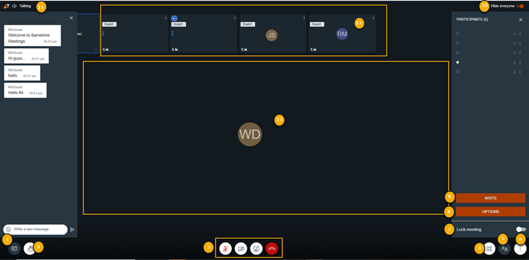

Inside a Sametime Meeting Room
About this task
This section provides information on the options visible to the user after joining a meeting.
Procedure
After joining a meeting, users will see the following points in the meeting room. Some features can be configured based on user preferences. Depending on the user’s role (owner, moderator, participant, or guest), some options may not appear.

Some features are configurable by the user and others are limited based on Server configuration. Company policies determine feature availability. Contact the Sametime Administrator for questions about feature availability.
- Chat
- Expands and Collapses the chat window that allows users to interact with other participants in the meeting.
- Raise hand
- Allows users to notify meeting participants of a response to a binary poll.
- Allows users to silently request attention from moderators or participants.
- A user can lower their hand. The moderator can also lower hands individually or collectively.
- Standard Meeting Controls
- Microphone
- Control the microphone in the Sametime Meeting.
- Browser permissions must be granted to enable the microphone.
- This control is separate from the microphone control on the operating system.
- The moderator can disable participant microphones individually or collectively.
- Camera
- Users can enable video in the Sametime Meeting.
- Browser permissions must be granted to enable the camera.
- The moderator can turn off active cameras.
- The video stream of users will be limited to the last few speakers. All other videos will auto-hide until the user speaks.
- Screensharing
- When screen sharing is enabled, the user will have the option to share part or all of their screen.
- Browser permissions must be granted to allow screen sharing (called screen recording on macOS).
- If greyed out, screenshare is disabled by the moderator.
- Leave
- Any user, including a moderator, can exit a meeting while still in progress without automatically ending the meeting.
- If another moderator is on the participant’s list, the meeting will continue as normal.
- If all moderators exit a meeting, the meeting will end after __ if a moderator does not return.
- Microphone
- Toggle Participants View
- Changes the layout of individual participant windows including video streams and screen sharing windows.
- Participants List and more
- Allows the user to view a vertical list of all participants.
- Users can view moderator, guest, and presenter according to icons.
- Moderators use this list to grant and revoke permissions, disable microphones/cameras and kick out participants.
- More Actions
- Manage video quality
- Default is HD (High definition).
- Depending on network connections, the user may choose to increase or decrease the quality.
- Blur your background
- When the camera is enabled, users can use this feature to blur the background of their video stream.
- View full screen
- Maximize the meeting browser window.
- Click escape to return to a standard window.
- Share a YouTube video
- Allows Moderator to share a video link from YouTube and play the video for all participants within the meeting.
- Start a live stream in YouTube
- Moderators can convert an interactive meeting to a lecture-style, view-only meeting.
- The meeting will automatically stream on YouTube.
- A link is provided to share with all participants.
- Contact your administrator for YouTube Steaming requirements.
- Copy the meeting link
- Allows the user to copy a full url for the meeting to share with invitees.
- Start recording
- Available to all moderators to record a meeting.
- When recording has been started, the moderator will see an option to Stop recording instead.
- End the meeting
- This option is available to moderators.
- Any moderator can use this option to end the meeting.
- This will immediately end the meeting for all participants.
- This option will also automatically stop all recordings when the meeting is ended.
- Settings
- Users can adjust their device settings.
- Moderators can also
- Add a meeting password.
- Change from a moderated meeting to an instant meeting.
- Allow guest users (this option is disabled by default).
- Manage video quality
- Lock Meeting
- Prevents additional participants from joining the meeting.
- Useful to prevent users from a subsequent meeting from entering early.
- Control participants when sharing confidential information.
- Can be toggled at any time throughout the meeting.
- Options
- Only visible to meeting moderators and owners.
- Lower all Hands.
- Mute everyone else without notification.
- Turn off all cameras without notification.
- Invite
- Available if the feature is enabled by Sametime Administrator.
- Allows the moderator to add other participants to a meeting via a telephone number.
- Hide everyone
- Only visible when participants are in top row view.
- Hide the individual participant windows on the top row.
- Keeps the focus only on who is speaking or on active screen share.
- Talking
- Displays the name of the active speaker.
- Horizontal Participants View
- Displays each participant window with initials, a picture, active camera, or screen share depending on users’ status.
- Interactive view
- Displays a focused view of one selected user’s window.
- This may be a shared screen, active camera, initials, or a saved image.
- This view is impacted by the toggle participants option.